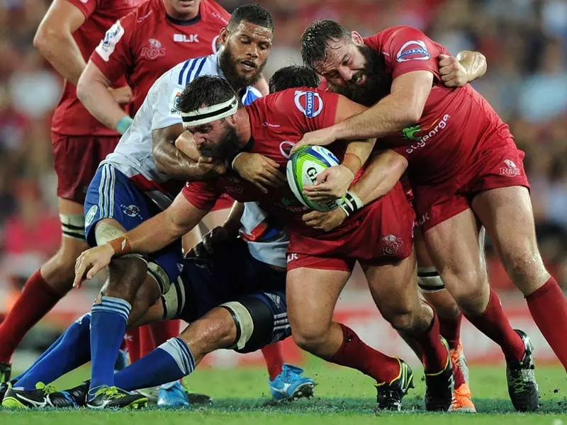
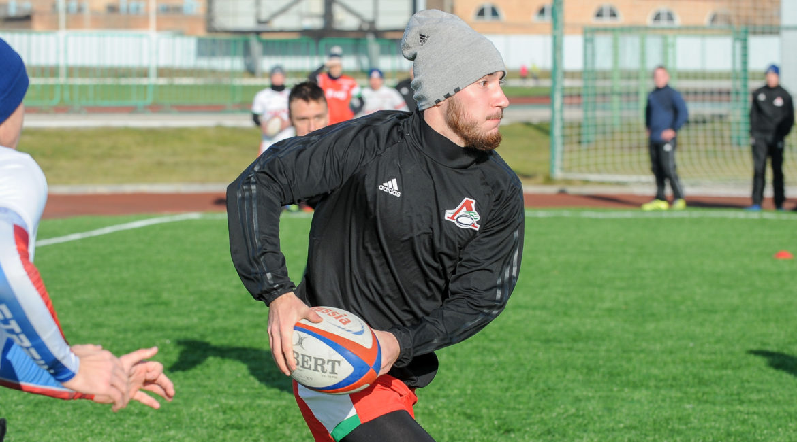

Информация о Регби

Регби (англ. Rugby) - это вид командной спортивной игры с мячом, который развивался в разных направлениях и имеет две основные вариации: регби-лига и регби-юнион. Обе версии регби требуют физической силы, выносливости, сноровки и стратегии. Регби пользуется популярностью в разных странах и часто считается одним из самых требовательных и захватывающих видов спорта.
Основные черты регби в обоих его версиях:
Мяч:
Мяч в регби имеет овальную форму, что делает его отличным от сферических мячей в других командных играх.
Цель игры:
Основная цель в регби - забрасывать мяч через ворота соперника или приземлять мяч в зоне ворот соперника, чтобы заработать очки. В зависимости от версии регби, есть разные способы набора очков.
Контактность:
Регби известно своей физической контактностью. Игроки могут толкать, блокировать, сталкиваться с соперниками, стремясь перехватить мяч или прекратить передвижение соперника.
Трение:
В регби-лиге и регби-юнион существует такое понятие как "трение". Это ситуация, когда команды сталкиваются друг с другом в борьбе за мяч, после чего мяч поступает в оборот.
Технические навыки:
Регби требует хорошей техники передачи, ловли мяча, бега, обводки соперников, защиты и других аспектов игры.
Тактика и стратегия:
В регби важна тактика и позиционирование игроков. Команды разрабатывают планы для атаки и обороны, которые могут меняться в зависимости от хода игры.
Продолжительность игры:
Время игры и правила могут различаться в зависимости от версии регби. Обычно игра делится на таймы, а каждая версия имеет свои правила по заменам игроков и дополнительным временам.
Важно отметить, что регби является не только спортивной деятельностью, но и обладает ценностями солидарности, командной работы и уважения к сопернику. Этот вид спорта имеет давние традиции и множество сторонников по всему миру.
советы

Стасть регбистом требует усилий, тренировок и преданности, так как это интенсивный и физически требовательный вид спорта. Вот некоторые шаги, которые помогут вам начать свой путь к становлению регбистом:
Оцените свой интерес и физическую подготовку:
Убедитесь, что вы действительно заинтересованы в регби и готовы заниматься интенсивной физической активностью. Регби требует высокой выносливости, силы и готовности к контактным ситуациям.
Выберите разновидность регби:
Решите, хотите ли вы заниматься регби-юнион или регби-лигой. Эти разновидности имеют свои особенности, правила и требования.
Поищите клуб или команду:
Найдите местный регби-клуб или команду, где вы сможете начать тренировки. Обычно в таких местах есть опытные тренеры, которые помогут вам развиваться как игрока.
Зарегистрируйтесь:
Зарегистрируйтесь в клубе и уточните расписание тренировок и игр. Вы также получите информацию о необходимой экипировке.
Приобретите экипировку:
Купите или арендуйте спортивную экипировку для регби, включая защитный шлем, защиту для плечей, бриджи (шорты), бутсы и другие необходимые компоненты.
Тренировки:
Регулярно участвуйте в тренировках, предоставляемых клубом. Тренировки будут включать в себя работу над техникой передачи, обводки соперников, защитой, тактикой и физической подготовкой.
Развивайте физическую форму:
Регби требует хорошей выносливости, силы и скорости. Работайте над физической подготовкой, включая кардиотренировки, упражнения для укрепления мышц и гибкость.
Освойте правила:
Ознакомьтесь с правилами выбранной разновидности регби. Правила варьируются в зависимости от регби-юнион или регби-лиги, и важно понимать, как играть согласно правилам.
Практикуйте контактные навыки:
Регби включает контактные ситуации, такие как столкновения и борьбу за мяч. Учитесь корректно выполнять контактные действия и соблюдать безопасность.
Участвуйте в играх:
Как только вы будете готовы, присоединяйтесь к играм и соревнованиям в рамках вашей команды или клуба. Это поможет вам применить навыки в реальных условиях и измерить свой прогресс.
Развивайтесь как игрок:
Слушайте советы тренеров и более опытных игроков. Постоянно работайте над улучшением своих навыков, техники и стратегии игры.
Поддерживайте здоровый образ жизни:
Важно следить за питанием, здоровьем и достаточным сном, чтобы обеспечить оптимальную физическую подготовку.
Учите себя дисциплине: Регби требует дисциплины и ответственности. Соблюдайте правила тренировок и игр, а также уважайте соперников и арбитров.